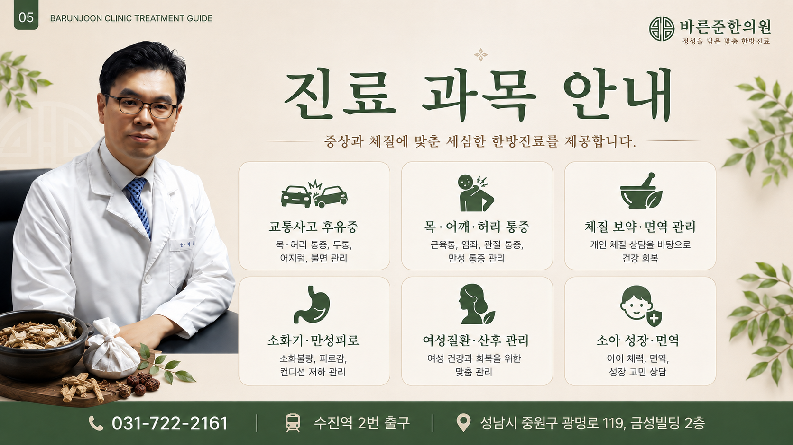

교통사고 후유증
교통사고 이후 나타나는 목·허리 통증, 두통, 어지럼, 수면 불편 등 몸의 변화를 살펴보고 진료 방향을 상담합니다.
바른준한의원은 경기도 성남시 중원구 광명로 119, 금성빌딩 2층에 위치한 한의원입니다. 조형준 원장이 환자 한 분 한 분의 증상과 생활 상태를 충분히 듣고, 현재 몸 상태에 맞는 한방진료 방향을 상담합니다.

바른준한의원은 수진역 2번 출구 인근에서 평일 오전 9시부터 오후 7시까지, 토요일 오전 9시부터 오후 2시까지 진료합니다. 전화상담과 네이버 예약을 이용할 수 있으며, 내원 전 증상과 진료 가능 여부를 문의하시면 보다 편리하게 안내받을 수 있습니다.

같은 증상이라도 불편한 부위, 생활습관, 컨디션과 회복 과정은 사람마다 다를 수 있습니다. 바른준한의원은 충분한 상담을 바탕으로 현재 상태를 살펴보고, 필요한 진료 방향을 이해하기 쉽게 안내하는 것을 중요하게 생각합니다.
환자의 증상과 생활 상태를 듣고 현재 불편함과 진료 방향을 상담합니다.
연령과 몸 상태를 고려하여 부담을 줄이고 편안하게 상담받을 수 있도록 안내합니다.

바른준한의원에서는 교통사고 후유증과 근골격계 통증부터 체질 보약, 피로·소화기 불편, 여성 및 소아 건강까지 다양한 증상에 대해 상담합니다. 실제 진료 방법은 내원 후 현재 상태를 확인한 뒤 안내합니다.
교통사고 이후 나타나는 목·허리 통증, 두통, 어지럼, 수면 불편 등 몸의 변화를 살펴보고 진료 방향을 상담합니다.
목, 어깨, 허리의 근육통과 염좌, 관절 불편, 반복되는 만성 통증 등 근골격계 증상을 상담합니다.
개인의 체질과 컨디션, 생활 상태를 고려하여 보약 및 건강 회복을 위한 한약 상담을 진행합니다.
소화불량, 속 불편감, 쉽게 지치는 피로감, 컨디션 저하 등 일상생활에서 반복되는 불편을 상담합니다.
여성 건강과 산후 회복 등 여성의 생애주기와 몸 상태를 고려한 한방 건강관리를 상담합니다.
아이의 체력과 면역, 성장 과정에서의 건강 고민을 보호자와 함께 상담합니다.

바른준한의원은 한약 조제와 약재 관리, 치료 후 휴식을 위한 원내 환경을 함께 소개하고 있습니다. 환자가 진료 전후로 편안하게 머물 수 있도록 정돈된 공간을 유지하는 것을 중요하게 생각합니다.
원내 탕전실과 약재 보관 공간을 운영하며 한약 조제 과정을 관리합니다.
치료 후 편안하게 쉴 수 있는 휴식 공간을 마련하고 있습니다.

바른준한의원은 수진역 2번 출구 인근, 경기도 성남시 중원구 광명로 119 금성빌딩 2층에 있습니다. 전화 또는 네이버를 통해 진료 문의와 예약을 할 수 있습니다.
경기도 성남시 중원구 광명로 119, 금성빌딩 2층에 있으며 수진역 2번 출구 인근입니다.
네. 토요일은 오전 9시부터 오후 2시까지 진료하며, 일요일과 공휴일은 휴진입니다.
교통사고 후유증, 목·어깨·허리 통증, 체질 보약·면역 관리, 소화기·만성피로, 여성질환·산후 관리, 소아 성장·면역 등에 대해 상담할 수 있습니다.
031-722-2161로 전화하거나 홈페이지의 네이버 예약 버튼을 이용할 수 있습니다.
바른준한의원은 수진역 2번 출구 인근에 위치해 있어 지하철을 이용해 내원하기 편리합니다.